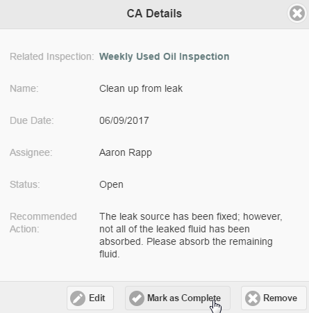
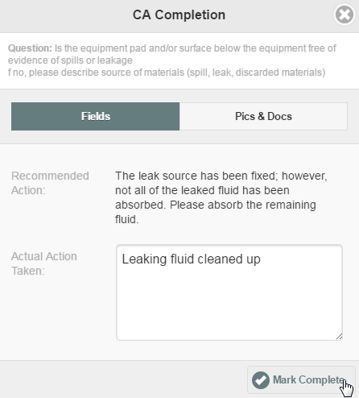

Corrective actions assigned to you can be seen on the Search page and are also shown on the Calendar.
To edit or complete corrective actions:
First, select a facility.
From the search page, select the CAs tab to search for corrective actions.
From the Calendar, select the CAs tab to filter for corrective actions on the calendar.
From the Facilities sidebar, select Corrective Actions to view all corrective actions for the facility.
Select the corrective action you want to complete.
To edit the corrective action, click Edit.
To delete the corrective action, click Remove. Note: You will need the required permissions for these actions.
To continue, click Mark as Complete.

The Completion dialog is displayed.
If you want to attach a picture or other file, select the Pics & Docs tab, then browse to select the file to attach. The file will be uploaded when the corrective action is marked complete. If a file is already attached, you may also choose whether to keep or delete it.
Documents and pictures cannot be uploaded while offline. If you need to attach documents or pictures to inspection questions, do not mark it complete until you have had an opportunity to upload the files when connected.
Click Mark as Complete.

Corrective actions cannot be completed offline and then synced. You will need to complete all corrective actions while connected.